| Brachytherapy |
Features
- Source adjacent/in tumour
- Local dose with rapid dose fall-off
|
| Dose Rate |

|
| Guidelines |
ICRU Report ( ) - Dose and Volume Specification for Reporting ( )
| ICRU-38 |
(1985) |
Intracavitary Therapy in Gynecology |
| ICRU-58 |
(1997) |
Interstitial Therapy |
|
| QA |
(TG-56)
|
Position Accuracy |
± 2 mm relative to applicator |
|
Temporal Accuracy |
± 2 mm relative to applicator |
|
| Emergency |
(TG-59)
Equipment
- Emergency container
placed close to patient
large enough to accept the whole applicator assembly
- Emergency kit
GM counter + pocket dosimeter when entering the room
|